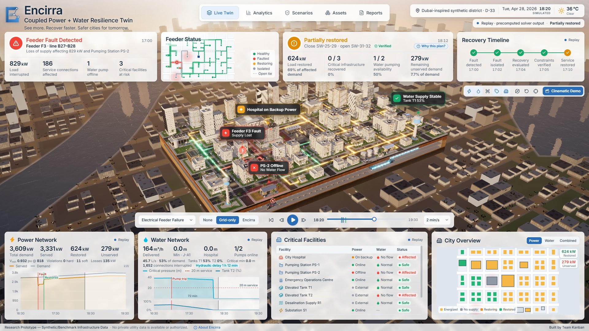
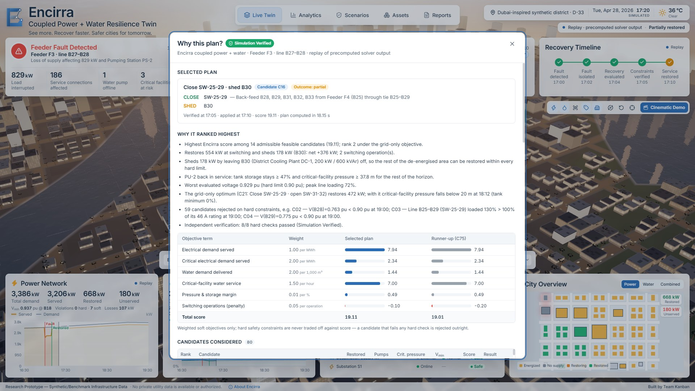

1The problem: failures cross domains
Urban water networks depend on electrically driven pumps. When a distribution feeder trips, the power outage is visible immediately, but the water consequence is hidden: elevated tanks keep pressure up for tens of minutes, then critical facilities such as hospitals lose supply.
Conventional fault restoration maximises restored electrical load. It treats a pump as an ordinary load and counts a hospital on its standby generator as “served”, so it can choose a plan that is electrically optimal and still lets the hospital run out of water.
2What Encirra is
A physics-driven, optimization-assisted digital twin that models the coupled networks, predicts the cascade, evaluates recovery plans across both domains and independently verifies them before they are recommended.
- Electrical: IEEE 33-bus distribution feeder (Baran & Wu) solved with AC power flow in pandapower; 37 switchable lines, 5 normally-open ties.
- Hydraulic: two-zone network (2 pumping stations, 2 elevated tanks, desalination supply) solved as a pressure-driven extended-period simulation with EPANET 2.2 via WNTR.
- 3D twin: a Dubai-inspired district with an exposed underground; every building is mapped to the bus that supplies it.
3Coupling the two models
If a pump’s bus is de-energised or below 0.90 pu, the pump stops and the hydraulic model is re-solved, so flow, pressure and tank levels always come from the recalculated simulation, never from a scripted curve.
4Recovery planning
After protection isolates the fault, Encirra generates radial reconfigurations from remote-operable switches (closing up to two ties, opening a sectionaliser, optionally shedding non-critical load) and simulates every candidate on the coupled model over the remaining horizon.
| Strategy | Decision rule |
|---|---|
| None | Baseline: the outage persists. |
| Grid-only | Conventional restoration: maximise restored electrical energy within hard limits. |
| Encirra | Weighted objective over served load, critical load, water delivered, critical-facility water service, pressure/storage margin and switching cost. |
5Independent verification
The selected plan is re-simulated minute by minute on networks rebuilt through a separate code path. Only plans that pass every hard check are labelled Simulation Verified.
Feeder-fault scenario: 80 candidates evaluated, 59 rejected with their physical reason, e.g. V(B29) = 0.775 pu < 0.90 pu or line B25–B29 loaded 130 % > 100 %.
6Results
| Scenario | Strategy | Net restored | PS-2 | Hospital min. p | Min < 20 m |
|---|---|---|---|---|---|
| Feeder fault | None | 0 % | off | 0.0 m | 79 |
| Grid-only | 69.2 % | off | 0.0 m | 79 | |
| Encirra | 78.7 % | on | 37.8 m | 0 | |
| Pump power loss | Grid-only | 91.7 % | off | 0.0 m | 79 |
| Encirra | 91.2 % | on | 37.8 m | 0 | |
| High demand | Both (same plan) | 78.6 % | on | 37.1 m | 0 |
Every selected plan passed every hard check. Under high demand both planners converge on the same plan, and Encirra’s advantage depends on the synthetic tie-line capacity; both findings are reported with a sensitivity analysis.
7The cascade, side by side


8Contribution & next steps
- An open, reproducible coupled power–water co-simulation with explicit pump-power feedback.
- Cross-domain recovery that protects critical water service, with independent verification and transparent evidence for every decision.
- Validated on a published benchmark (Vmin 0.913 pu at B18, 202.7 kW losses reproduced); 90 simulation, 45 interface and 15 browser tests.
- Next: valve actions in the planner, larger and real-topology networks, uncertainty in demand and repair times, and utility partnership for validation.